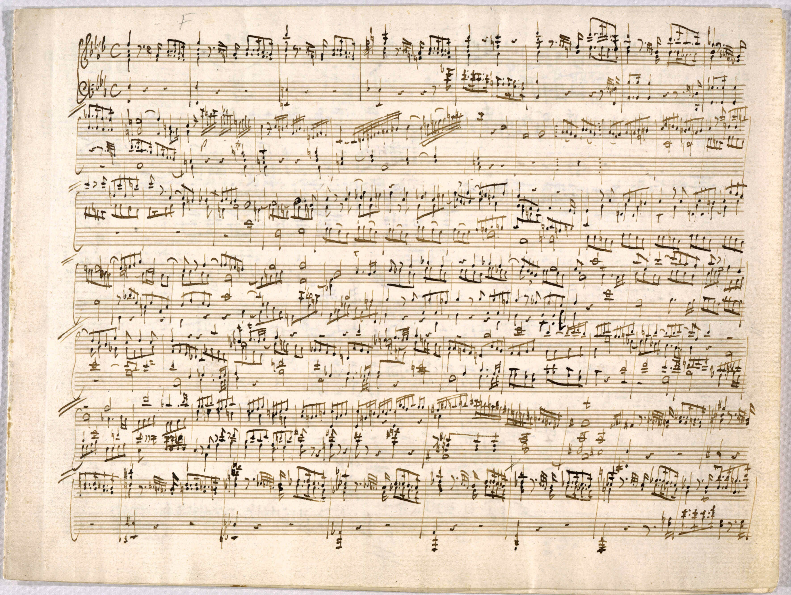
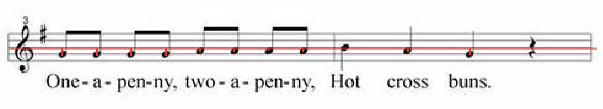
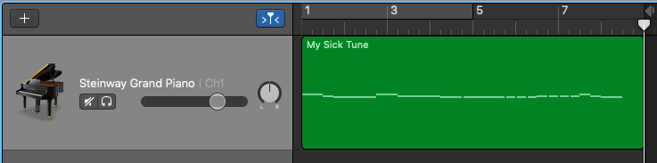
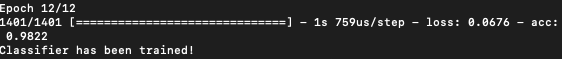

Snapplay (2019)
Wouldn't it be nice to take a picture of some sheet music and instantly have it played aloud?
This might be useful for composers who jot down musical ideas on paper, or children learning to play an instrument who
forget what a certain passage of their homework sounds like.
For the final project for Brown’s Computer Vision course (Spring 2019), I worked with Eliza Macneal and Aaron Zhang
to build an application that realizes this idea. 'Snapplay' converts images of handwritten
sheet music into
MIDI. This problem requires
detecting notes on a page, determining their orientation and relative location to each other, as well as their duration value.
Our pipeline divides this task into multiple discrete sub-tasks, each of which are optimized independently.
Related Work
Two pieces of related work (people trying to do more or less the same thing) can be found
here and
here.
We did not adhere to the general methods outlined in thoseworks, however we took inspiration in consulting some of
the specific transforms, most notably using the
Hough Line Transform to detect lines and a masking process to delete staff lines.

Preprocessing
Before performing any work on the image, we preprocessed the image by scaling it to a certain size in order to aid in line detection and note detection
down the line. Furthermore, we converted the image to black and white. For the purpose of this project, we assumed that all input images would be properly
aligned and justified so that all staff lines would be horizontal. In order to augment and further the capabilities of our application, another
important function in the preprocessing step would be to transform our image so that it is projected squarely.
Detecting lines
In order to detect staff lines we used Hough Line Transform. We opted to use a simple Hough Line Transform
with the parameters set so that we returned more lines than we wanted. We preferred this option
because we had the capability to filter out lines that we knew
were not actual staff lines. The alternative would be to have the transform not return all of the staff lines, which we
thought would be more difficult to deal with. After retrieving the results of the Hough Line Transform, we filtered through
them to only keep the lines that spanned across most of the page. After detecting the locations of lines, we calculated
various important measures such as space between individual staff lines, as well as locations of each group of
staff lines forming a line of music.
Detecting notes
In order to detect notes, we used a correlation. We used two correlation templates: one
for detecting closed notes, and one for detecting open notes. We scaled the template size
based on the space between individual staff lines so that our template would be roughly the
same size as notes on the page.

Classifying Note Duration
One challenging decision we had to make was how to identify note duration. Correlation had worked decently well on quarter notes,
but because eighth notes can vary in appearance so radically
(beams can be angled in a number of ways) we decided to go with a CNN classifier to identify duration.
Our classifier was trained on our own data set of half, quarter, and eighth notes.
To isolate notes for both classifier training and duration classification, we extract a bounding box around the note which we feed to the CNN classifier.
The bounding box keeps a fixed width of space around the note relative to the spacing between the lines.
The height of the box is a fixed multiple of the width in order to maintain a fixed aspect ratio for the CNN classifier.
Before bounding our notes, we delete the image's horizontal lines, to better distinguish notes from each other.
Deleting the horizontal lines proved to be a balancing act-- we wished to remove the stave lines while retaining the insides
of quarter and eighth notes, as well as the horizontal cross-beams of eighth notes.
As mentioned, we train our classifier on a data set of half, quarter, and eighth notes. We achieved an efficient process of labeling data by
composing pages of sheet music containing entirely one type of note, and constructing label lists with their durations of the length
of the number of notes picked up by the note detector; the only step for labeling after this was identifying the non-notes
picked up by our note detector.
Of course, deep nets take time to optimize.
We were limited in time and in data, but overall our deep net performed relatively well. Our success even given our
limitations leads us to believe that CNN was the correct choice for the task, and given more time and more training data,
we could optimize it even better.
The CNN classifier architecture is adapted from a generic MNIST handwritten digit classifier, with additional convolutional
and max pooling layers and an optimized number of epochs.
MIDI Conversion
Unlike audio files, MIDI files simply contain the instructions for playing music.
This makes the task of writing a MIDI file very simple. Our program doesn't handle multiple lines of music,
so we initialize a MIDI object with a single track and a single channel, and include tempo and volume parameters for user tuning.
The MIDI converter takes in a list of pitches and a corresponding list of durations, and adds a note to the MIDI object for
each pair in the corresponding lists. Afterwards, it writes the MIDI object to a file.

Results
Our program achieved mixed success. While it aced pitch identification and omission of non-notes,
its duration classification was iffy. With 12 epochs, our classifier consistently achieved around 98 percent accuracy on the training data.

However, duration identification on unforeseen data was not quite as hot. This may have been cause by
data over fitting, in combination with the fact that eighth, quarter, and half notes are actually
pretty visually similar.
Another reason for our mixed success with durations, as mentioned in the Method section,
was our line deletion. Included below are some of our better and worse training data points,
sampled from different parts of the image where line deletion achieved varying levels of success.
This project was super fun, but there's a lot left to improve. Some future features that we could implement if we
return to the project include key-signature identification, rest note identification
(a matter of adding categories to the classifier and perhaps another initial correlation kernel),
and having prepossessing handle handwritten music.